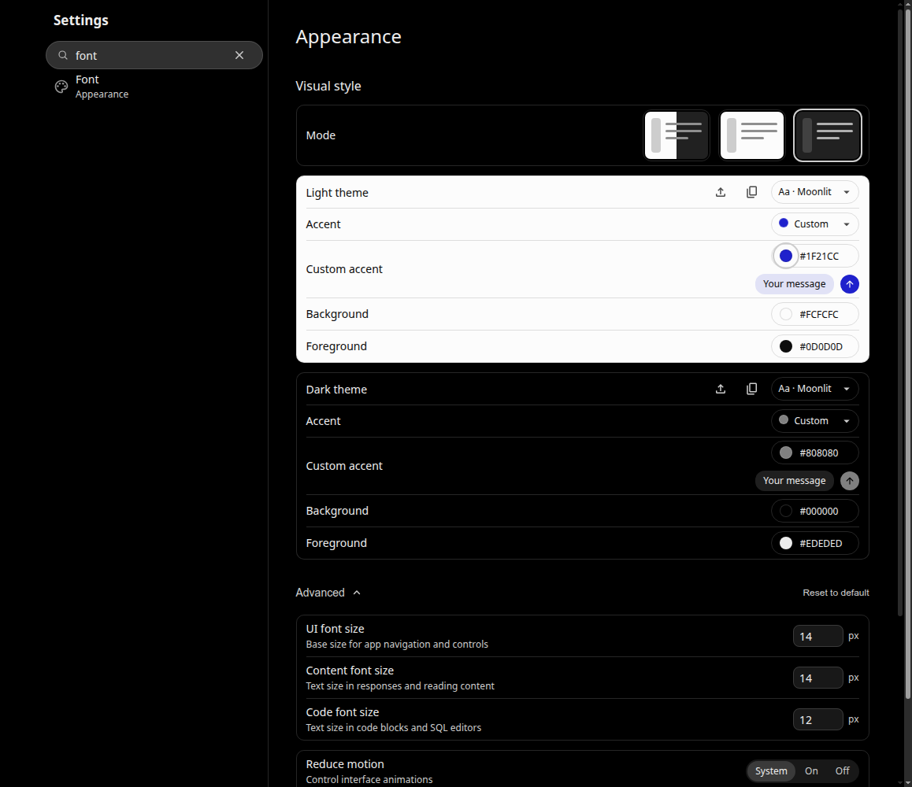

Real components with synthetic messages and an unsent draft. Both views use the ChatGPT preset, 1158×1000 viewport, DPR 1 and the selected mode/accent. These demonstrate Moonlit changes; they do not establish pixel parity with ChatGPT.
The light profile can preview its message and action colors while the application remains dark.
